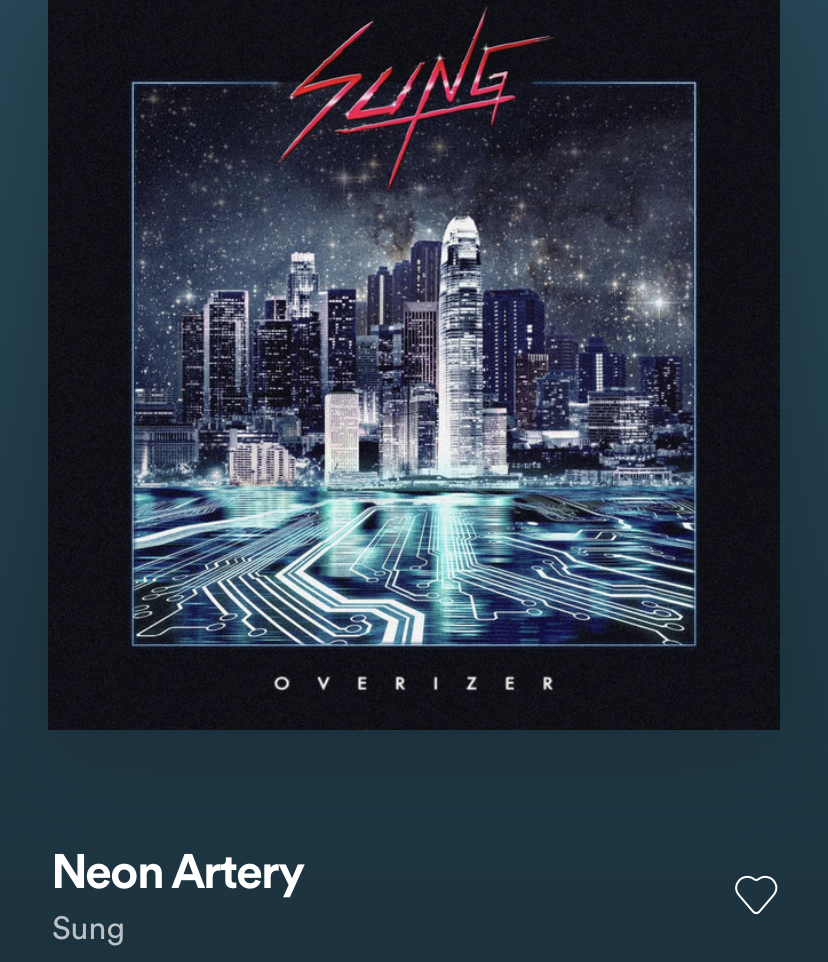

Results
• Inspiration •
Spotify: Retrowave/Synthwave



By using W3 Schools I learned that for an animation to be linked it needs
a matching keyframe name with one element being the original and using the keyframe
element as the change. I also learned about using pecentages as the "keyframes" and they
function as if they are their own elements. We started small by animating the borders but it
took a lot of time to figure out. I later used what I learned to animage my title, links, and an image.
I resolved my transition issue by changing the image's position and the block that contained it.
Turns out that if it inherits a centered feature, float left wont work at all same with positioning.
I had to change the contianer and make a seperate centered block for the items I wanted centered.
I also found that working with percentages made the transition easier.
The hardest item in my lab was animating my beatbox image. The animation wasnt the hard part,
it was the positioning that got tricky because the animation involved scaling in size.
The animated scale broke the original positioning I had for the image. It took a
while to fix but I ended up making it centered and had to fiddle with the positioning.
I enjoyed working with my new partner.
Here is our SUPER tacky nyan cat website.